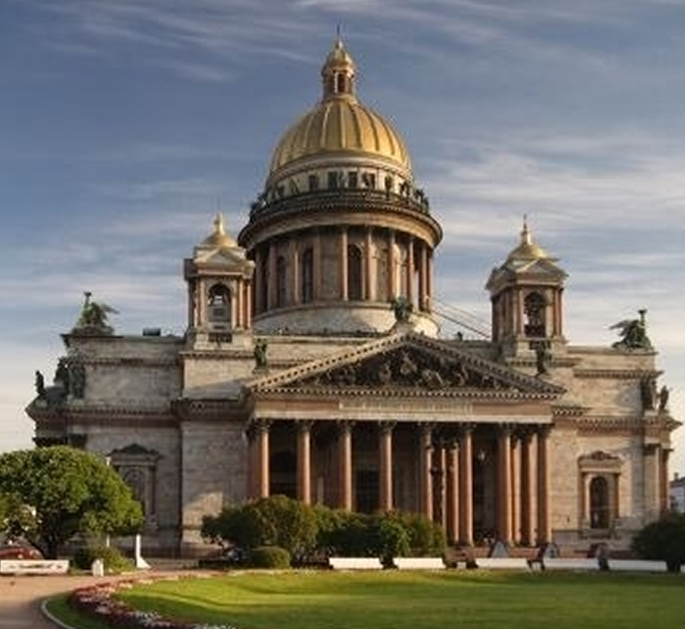
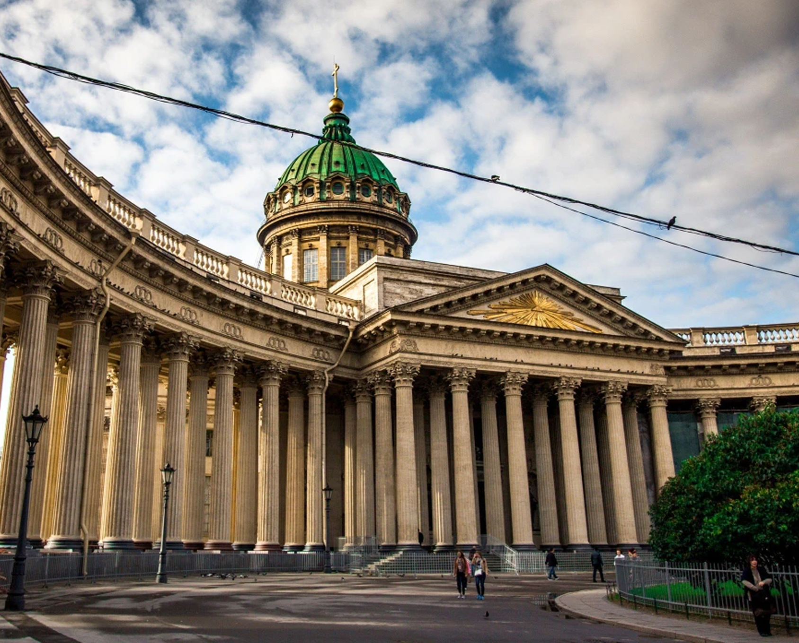
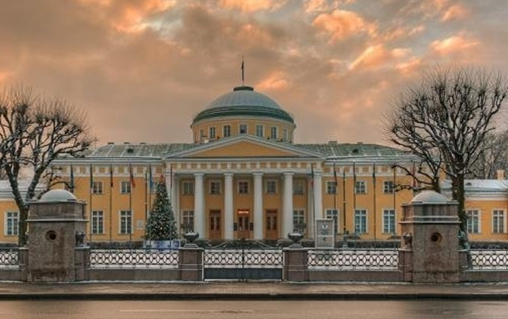

Спокойствие
Русский классицизм
01 // Тяжесть, ставшая легендой
Исаакиевский собор
В классицизме Исаакия спокойствие — это не мягкость, это монолит. Исаакий давит своим куполом, но не угнетает. Он учит: истинное спокойствие — это не отсутствие веса, а умение его нести. Когда город вокруг кипит, когда тысячи людей проходят под гранитными колоннами — внутри остаётся пространство, где время почти останавливается.
Четыре портика, сто двенадцать колонн из цельного гранита. Монферран строил сорок лет. Спокойствие здесь — это не быстрое успокоение, это выдержка. Собор помнит, что даже самую тяжёлую ношу можно превратить в гармонию.

Исаакиевский собор // Огюст Монферран // 1818-1858 гг.
02 // Медленность бытия
Казанский собор
Спокойствие в Петербурге — это не отсутствие ветра, а умение сохранять вертикаль, когда всё вокруг стремится согнуть. Классицизм говорит с нами языком античных колоннад и строгих треугольников фронтонов.
Это не холод, это — равновесие. В городе, построенном на воде и болоте, архитектура нашла свою формулу устойчивости. Когда внутри вас наступает тишина после бури, когда хаос чувств обретает порядок — вы входите в пространство Империи. Это способность смотреть на бушующую Неву и чувствовать, как каменный парапет удерживает мир от падения.
Колоннада Казанского собора — это каменные объятия. Она не отгораживает от мира, а создает безопасное пространство внутри суеты. Здесь спокойствие обретает форму ритма: повторяющиеся колонны успокаивают разум, как четки.


Казанский собор // Андрей Воронихим // 1801-1811 гг.
03 // Глубина в себе
Таврический дворец
Есть спокойствие парадное — а есть камерное. Таврический дворец — это тишина, спрятанная в центре города. Колоннада, уходящая вглубь, создаёт эффект бесконечного коридора, где суета теряется в перспективе. Это способность остановиться не на площади, а в себе.
Строгий дорический ордер, никакого золота. Спокойствие здесь — аристократическое, без желания кому-то что-то доказывать. Потемкин называл это место «домом для души». Архитектура работает как дыхательная практика: каждый шаг вглубь колоннады — выдох.

Таврический дворец // Иван Старов // 1783-1789 гг.